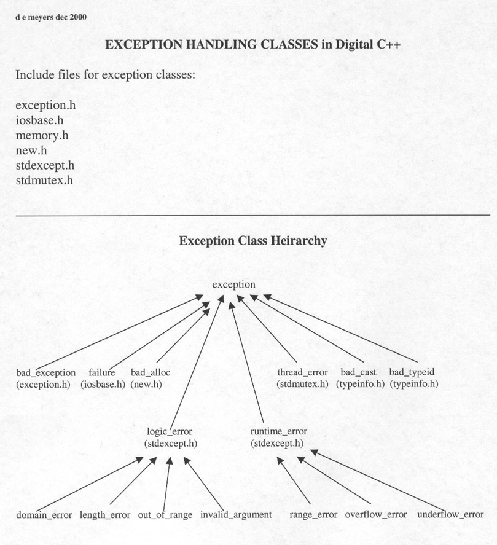

The exception class hierachy of GNU C++ on Solaris is identical to dUnix
with the exception of the thread_error from std_mutex.
The std_mutex class is particular to dUnix's method of handling threads, which differs from Solaris.
The ios_base::failure exception class is included in the derived classes of the iostream libary. It is not possible to directly include the iosbase class.
